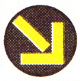
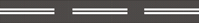

8. Регулирование дорожного движения
Временные дорожные знаки размещаются на переносных устройствах, дорожном оборудовании или закрепляются на щите с фоном желтого цвета и имеют преимущество перед постоянными дорожными знаками.
Дорожные знаки должны размещаться так, чтобы их было хорошо видно участникам дорожного движения как в светлое, так и в темное время суток. При этом дорожные знаки не должны быть прикрыты полностью или частично от участников дорожного движения какими-либо препятствиями.
Дорожные знаки должны быть видимыми на расстоянии не менее 100 м по направлению движения и размещены не выше 6 м над уровнем проезжей части.
Дорожные знаки устанавливаются на обочинах дороги на стороне, соответствующей направлению движения. Для лучшего восприятия могут быть размещены над проезжей частью. Если дорога имеет для движения в одну сторону больше одной полосы, установленный на обочине дороги соответствующего направления дорожный знак дублируется на разделительной полосе или над проезжей частью, или на противоположной стороне дороги (в случае, если для встречного движения имеется не более двух полос).
Дорожные знаки размещаются таким образом, чтобы информация, которую они передают, могли воспринимать только те участники движения, для которых она предназначена.
Сигналы светофоров, кроме желтого мигающего, имеют преимущество перед дорожными знаками приоритета.
Водители и пешеходы должны выполнять дополнительные требования регулировщика, даже если они противоречат сигналам светофоров, требованиям дорожных знаков и разметки.
- а) предупреждающие знаки. Информируют водителей о приближении к опасному участку дороги и характере опасности. Во время движения по этому участку необходимо принять меры для безопасного проезда;
- б) знаки приоритета. Устанавливают очередность проезда перекрестков, пересечений проезжих частей или узких участков дороги;
- в) запрещающие знаки. Вводят или отменяют определенные ограничения в движении;
- г) предписывающие знаки. Показывают обязательные направления движения или разрешают некоторым категориям участников движение по проезжей части или на отдельных ее участках, а также вводят или отменяют некоторые ограничения;
- ґ) информационно-указательные знаки. Вводят или отменяют определенный режим движения, а также информируют участников дорожного движения о расположении населенных пунктов, различных объектов, территорий, где действуют специальные правила;
- д) знаки сервиса. Информируют участников дорожного движения о расположении объектов обслуживания;
- е) таблички к дорожным знакам. Уточняют или ограничивают действие знаков, вместе с которыми они установлены.
Дорожная разметка должна быть видимой для участников дорожного движения как в светлую, так и в темную пору суток на расстоянии, обеспечивающем безопасность движения. На участках дорог, где дорожную разметку участникам дорожного движения тяжело увидеть (снег, грязь и пр.) или дорожную разметку нельзя обновить, устанавливаются соответствующие по содержанию дорожные знаки.
К нему относится:
- а) ограждение и световое сигнальное оборудование в местах строительства, реконструкции и ремонта дорог;
- б) предупреждающие световые круглые тумбы, которые устанавливаются на разделительных полосах или островках безопасности;
- в) направляющие столбики, предназначенные для обеспечения видимости внешнего края обочин и опасных препятствий в условиях недостаточной видимости. Обозначаются вертикальной разметкой и должны быть оборудованы светоотражателями: справа – красного цвета, слева – белого;
- г) выпуклые зеркала для расширения обзорности водителям транспортных средств, проезжающим перекресток или другое опасное место с недостаточной обзорностью;
- ґ) дорожные ограждения на мостах, путепроводах, эстакадах, насыпях и других опасных участках дорог;
- д) пешеходные ограждения в опасных для перехода проезжей части местах;
- е) вставки разметочные дорожные для улучшения зрительной ориентации водителей на проезжей части;
- є) устройства принудительного снижения скорости транспортных средств;
- ж) шумовые полосы для повышения внимания участников дорожного движения на опасных участках дорог.
Сигналы светофора могут быть с нанесенной сплошной или контурной стрелкой (стрелками), с силуэтом пешехода, Х-образные.
На уровне красного сигнала светофора с вертикальным расположением сигналов может устанавливаться табличка белого цвета с нанесенной на ней стрелкой зеленого цвета.
- а) зеленый разрешает движение;
- б) зеленый в виде стрелки (стрелок) на черном фоне разрешает движение в указанном направлении (направлениях). Такое же значение имеет сигнал в виде зеленой стрелки (стрелок) в дополнительной секции светофора.
-
в)
зеленый мигающий разрешает движение, но информирует о том, что в скором времени будет включен сигнал, запрещающий движение.
Для информирования водителей о времени (в секундах), оставшемся до конца горения сигнала зеленого цвета, могут применяться цифровые табло;
- г) черная контурная стрелка (стрелки), нанесенная на основной зеленый сигнал, информирует водителей о наличии дополнительной секции светофора и указывает иные разрешенные направления движения, чем сигнал дополнительной секции;
- ґ) желтый запрещает движение и предупреждает о предстоящем изменении сигналов;
- д) желтый мигающий сигнал или два желтых мигающих сигнала разрешают движение и информируют о наличии опасного нерегулируемого перекрестка или пешеходного перехода;
-
е)
красный сигнал, в том числе мигающий, или два красных мигающих сигнала запрещают движение.
Сигнал в виде зеленой стрелки (стрелок) в дополнительной (дополнительных) секции (секциях) вместе с желтым или красным сигналом светофора информирует водителя о том, что движение разрешается в указанном направлении при условии беспрепятственного пропуска транспортных средств, движущихся с других направлений.
Стрелка зеленого цвета на табличке, установленной на уровне красного сигнала светофора с вертикальным расположением сигналов, разрешает движение в указанном направлении при включенном красном сигнале светофора с крайней правой полосы движения (или крайней левой полосы движения на дорогах с односторонним движением) при условии предоставления преимущества в движении другим его участникам, движущимся с других направлений на сигнал светофора, разрешающий движение;
- є) сочетание красного и желтого сигналов запрещает движение и информирует о следующем включении зеленого сигнала;
- ж) черные контурные стрелки на красном и желтом сигналах не изменяют значения этих сигналов и информируют о разрешенных направлениях движения при зеленом сигнале;
- з) выключенный сигнал дополнительной секции запрещает движение в направлении, указанном ее стрелкой (стрелками).
Сигнал в виде стрелки, разрешающий поворот налево, разрешает и разворот, если он не запрещен дорожными знаками.
Сигнал в виде зеленой стрелки (стрелок) в дополнительной (дополнительных) секции (секциях), включенный вместе с зеленым сигналом светофора, информирует водителя о том, что он имеет преимущество в указанном стрелкой (стрелками) направлении (направлениях) движения перед транспортными средствами, движущимися с других направлений;
Основные сигналы реверсивного светофора могут быть дополнены желтым сигналом в виде стрелки, наклоненной по диагонали вниз вправо,  включение которого запрещает движение по полосе, обозначенной с обеих сторон дорожной разметкой  1.9 (см. приложение 2), и информирует об изменении сигнала реверсивного светофора и необходимости перестроиться на полосу движения справа.
При выключенных сигналах реверсивного светофора, расположенного над полосой, обозначенной с обеих сторон дорожной разметкой 1.9, въезд на эту полосу запрещен.
Движение разрешается только в случае включения одновременно нижнего сигнала и одного или нескольких верхних, из которых левый разрешает движение налево, средний – прямо, правый – направо. Если включены только три верхних сигнала – движение запрещено.
В случае выключения или неисправности трамвайных светофоров водители трамваев должны руководствоваться требованиями светофоров со световыми сигналами красного, желтого и зеленого цветов.
- а) мигающие красные сигналы запрещают движение транспортных средств через переезд;
- б) мигающий бело-лунный сигнал показывает, что сигнализация исправная и не запрещает движения транспортных средств.
На железнодорожных переездах одновременно с запрещающим сигналом светофора может быть включен звуковой сигнал, дополнительно информирующий участников дорожного движения о запрещении движения через переезд.
 Если сигнал светофора имеет вид силуэта пешехода, его действие распространяется только на пешеходов, при этом зеленый сигнал разрешает движение, красный – запрещает.
Если сигнал светофора имеет вид силуэта пешехода, его действие распространяется только на пешеходов, при этом зеленый сигнал разрешает движение, красный – запрещает.
Для слепых пешеходов может быть включен звуковой сигнал, разрешающий движение пешеходов.
-
а)
руки вытянуты в стороны, опущены или правая рука согнута перед грудью:
- с левой и правой сторон – разрешено движение трамвая прямо, нерельсовым транспортным средствам – прямо и направо; пешеходам разрешено переходить проезжую часть за спиной и перед грудью регулировщика;
- со стороны груди и спины – движение всех транспортных средств и пешеходов запрещено;
-
б)
правая рука вытянута вперед:
- с левой стороны – разрешено движение трамвая налево, нерельсовым транспортным средствам – во всех направлениях; пешеходам разрешено переходить проезжую часть за спиной регулировщика;
- со стороны груди – всем транспортным средствам разрешено движение только направо;
- с правой стороны и спины – движение всех транспортных средств запрещено; пешеходам разрешено переходить проезжую часть за спиной регулировщика;
-
в)
рука поднята вверх;
- движение всех транспортных средств и пешеходов запрещено во всех направлениях.
Жезл используется только работниками подразделений Госавтоинспекции и военной инспекции безопасности дорожного движения.
Для привлечения внимания участников дорожного движения используется сигнал, поданный свистком.
Регулировщик может подавать другие сигналы, понятные водителям и пешеходам.
- а) жезлом или рукой, указывающим на это транспортное средство;
- б) при помощи включенного проблескового маячка синего и красного или только красного цвета и (или) специального звукового сигнала;
- в) при помощи громкоговорящего устройства;
- г) при помощи специального табло, на котором указывается требование об остановке транспортного средства.
Водитель должен остановить транспортное средство в месте, на которое ему будет указано, с соблюдением правил остановки.
 1.12 (стоп-линия)
(см. приложение 2), дорожным знаком
5.62 «Место остановки»
(см. приложение 1), если их нет –
не ближе 10 м
до ближайшего рельса перед железнодорожным переездом, перед светофором, пешеходным переходом, а если и они отсутствуют и во всех других случаях – перед пересекаемой проезжей частью, не создавая препятствий для движения пешеходов.
1.12 (стоп-линия)
(см. приложение 2), дорожным знаком
5.62 «Место остановки»
(см. приложение 1), если их нет –
не ближе 10 м
до ближайшего рельса перед железнодорожным переездом, перед светофором, пешеходным переходом, а если и они отсутствуют и во всех других случаях – перед пересекаемой проезжей частью, не создавая препятствий для движения пешеходов.